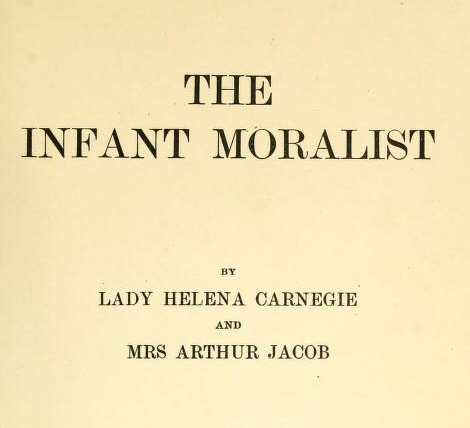

Wednesday, November the 23rd, 2011
back to: title, date or indexes
Reader Kimika Ying has unearthed a treasure from the past.

Dear Mr. Key, she writes, I've found a book which put me in mind of Hooting Yard which I would like to pass along, “The Infant Moralist” by Lady Helena Carnegie and Mrs. Arthur Jacob, published in 1903. Public domain versions of the book, with a delightfully illustrated copy of the original, are located here
It contains some of the usual moral lessons on “The Consequences of Greed”, “Profanity”, “Envy”, “Courage”, etc. What caught my attention were the less commonly heard ones: “Insensate Mischief”, “Inevitable Retribution”, “Unsuitable Jesting”, and “Ill-Timed Levity”.
And this:
THE CHATTERBOX
I needs must beg you, Caroline,
To cease your Chatter whilst I dine.
It deafens every Ear.
John Footman cannot hear my Words,
And I have asked him twice for Curds
And still he cannot hear.
If Caroline were with us today she would undoubtedly have a cell phone out at the dinner table as well. Anyway, all fine moral lessons and a good addition to any library. It also occurs to me that this book might be a superior replacement for the usual deadly dull workplace employee handbook.